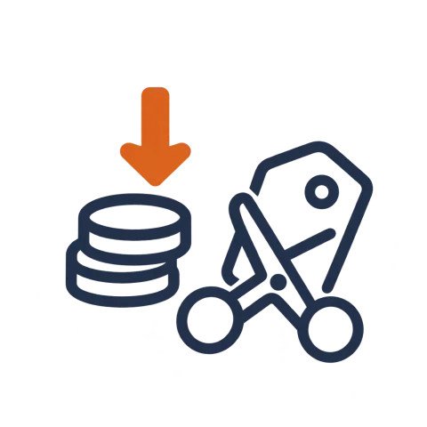
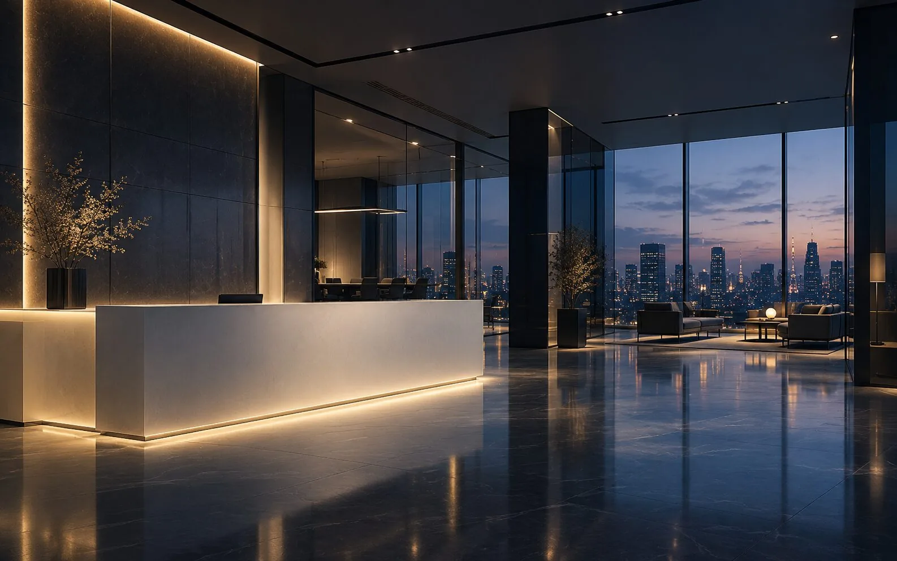

−40%

SEO・スカウト経由の応募が増え、媒体予算を圧縮
LIMITED今月、人材紹介会社さま先着7社限定で媒体費削減シミュレーション資料を無料作成しています
人材紹介会社向け｜求人ポータルサイト構築
Indeed・媒体依存から脱却し、自社の求職者DB／スカウト／会員化／LINE連携で長期的な集客資産を作る。
中小〜中堅の人材紹介会社・専門職特化の紹介会社の採用ROI改善に、創業20年・支援120社の知見で伴走します。
セルバが選ばれる理由

−40%

SEO・スカウト経由の応募が増え、媒体予算を圧縮
×2.5倍
媒体経由から自社流入比率へ大きくシフト
10,000名
人材紹介事業の長期的な競争資産になる
120社+
30万人
9億円
2003年
PAIN POINTS
人材紹介会社の集客・送客環境は、ここ数年で大きく変わりました。
媒体だけで戦い続けるのが、もう難しくなっています。
FOR YOUR CHALLENGE
媒体費・自社流入比率・スカウト効果の現状を可視化し、改善余地を明文化したレポートをお返しします。営業電話はいたしません。
※ 検討段階の相談OK／資料だけのご請求も歓迎
MARKET CONTEXT
「自社で求職者DBを持つ仕組み」が必要なのは、業界の構造変化に裏付けがあります。
媒体に依存し続けることのリスクが、ここ数年で大きくなっています。

CHANGE 01
×1.7倍
求職者数の頭打ちと媒体間競争が激化し、Indeed・求人ボックス・各種転職媒体ともに掲載・スポンサー単価が継続的に上昇。媒体運用だけで採用利益を確保することは年々難しくなっています。
CHANGE 02
2-3回/年
大規模仕様変更・スポンサー比率の調整・有料連携の方針変更が短い周期で発生。媒体トラフィック頼みの紹介会社ほど、月次の応募数・面談数が読めなくなる構造に陥っています。
CHANGE 03
80%+
求職者の情報収集行動が多チャネル化し、媒体掲載のみでは認知も囲い込みもできない時代に。自社サイト・自社会員DBを持たない事業者は、機会損失が継続的に拡大していきます。
だからこそ、「自社で求職者DBを蓄積し、媒体に依存しないチャネルを持つ」ことが、これからの人材紹介事業の競争力の源泉になります。
求人ポータルサイト構築は、媒体費の削減策ではなく、事業構造そのものを長期で守るための投資です。
OUR SOLUTION
媒体に広告費を払い続けるのではなく、自社で求職者DBを持ち、検索流入とスカウトで集客する仕組みに切り替えることで、利益構造そのものが変わります。
BEFORE｜従来の集客
AFTER｜セルバの導入後
SIMULATION
現在の媒体費・応募数・成約率をお伺いし、自社サイト導入後3年間のROI改善イメージを試算した資料をお返しします。秘密保持契約締結も可能です。
※ 営業ではなく、純粋な現状診断としてお使いいただけます
FEATURES
単なるサイト制作ではなく、人材紹介ビジネスの利益を変えるための機能設計を行います。
FEATURE 01
「職種 × エリア × 雇用形態 × 条件」で自動的にSEOページを大量生成。求職者が検索する具体ワードを面で押さえ、媒体に頼らず月数千〜数万単位の自然流入を獲得する設計を行います。

FEATURE 02
離脱しがちな匿名訪問者を、会員登録・LINE連携で識別。希望条件に合う求人を自動配信し、長期的に追客できる仕組みに。年単位で蓄積するDBが、御社の最大の競争資産になります。
FEATURE 03
応募〜面談調整〜稼働までのステータス管理、メール・LINE自動送信、担当割振りまで一元化。エージェントが「人と話すこと」に集中できる体制を作ります。
FUNCTION LIST
求職者・紹介担当者・運営管理それぞれの動線で必要な機能を、標準パッケージ＋オプションで網羅。
御社の運用フローに合わせて、必要な範囲を組み合わせます。
BENEFITS
セルバのポータル開発実績から、人材紹介事業者で多く見られる改善イメージです。
−40%
SEO・スカウト経由の応募が増えることで、媒体予算を継続的に圧縮できます。
×2.5
媒体経由から自社流入比率へシフト。利益率の高い応募が増えていきます。
10,000名
将来の母集団となる求職者データが、紹介事業の長期的な資産になります。
MODEL CASES
同業種・近接領域での開発実績から、人材紹介会社における代表的な成果イメージをご紹介します。
CASE 01｜中堅IT人材紹介
想定規模：紹介担当15名／媒体費 月200万円規模
エンジニア職種別×リモート可否×単価レンジでSEOページを自動生成し、技術ブログを内製化。スカウト機能との組み合わせで、媒体経由の応募を自社流入に置き換えていく構成。

CASE 02｜専門職特化
想定規模：紹介担当8名／専門職特化型
資格別・経験年数別の細かい属性データを取り、ターゲティング精度を大幅に向上。LINE連携によるリマインドで離脱を防ぎ、長期的な紹介機会を獲得できる構成に。

CASE 03｜地方拠点
想定規模：拠点3／地方ハイクラス領域
都道府県×職種×年収帯のロングテールSEOを徹底。Uターン・Iターン層向けの記事コンテンツ、地域企業情報DBを併設することで、媒体掲載のないエリアでも応募が集まる仕組みに。
※上記は近接領域の支援実績をもとにしたモデルケースです。実数値はクライアントごとに異なります。
FOR YOUR ROI
事業規模・拠点数・職種特性をお伺いし、3年間の媒体費削減幅・応募増加見込み・必要投資額をまとめた個別改善プランをご提案します。
※ 競合比較・他社見積もりとの比較検討、歓迎です
COMPARISON
「Web制作会社に頼む」「求人系SaaSを使う」「Indeed運用代行に任せる」、
それぞれと比べてセルバの求人ポータル構築は何が違うのか、客観的に整理しました。
| 比較項目 | 推奨セルバ | 他のWeb制作会社 | 求人系SaaS | Indeed運用代行 |
|---|---|---|---|---|
| 自社求職者DBの蓄積 | ◎自社資産として蓄積 | △制作会社次第 | △SaaS側に蓄積 | ×媒体側に蓄積 |
| SEO・自然流入設計 | ◎職種×エリア大量生成 | △表層対応のみが多い | ×テンプレ依存 | ×媒体内CPCのみ |
| 業界特化の要件定義 | ◎創業20年・支援120社 | ×業界知見が浅い | △標準機能の範囲 | △媒体特化のみ |
| カスタマイズ・拡張性 | ◎事業成長に合わせ拡張 | △制作後の改修弱め | ×機能制約 | ×媒体仕様内 |
| 採用ROI改善のコミット | ◎3年ROIで設計 | ×納品で完了 | ×機能提供のみ | △媒体KPIまで |
| 公開後の運用伴走 | ◎SEO/CVR改善まで | △保守のみが多い | ○カスタマーサクセス | ○媒体運用代行 |
| 初期費用の目安 | 300万円〜 | 200〜500万円 | 初期20〜80万円 | 媒体費の20〜30% |
| 3年トータルコスト感 | 構築費＋運用費／資産化 | 制作費＋媒体費依存 | 月10〜30万 ×36 | 媒体費 ×36 ＋手数料 |
他社・SaaS・Indeed運用は「機能や運用の提供」が中心。
セルバは「採用ROIの構造そのものを変える」ことにコミットしている点が、最も大きな違いです。
WHY SELVA
「ただ作るだけのWeb制作会社」ではなく、利益向上に直結する設計から運用までを伴走する体制を、20年かけて作り上げてきました。
セルバの企画は、機能の網羅性ではなく「導入後3年で媒体費・採用単価がどう変わるか」のシミュレーションから始まります。求人ポータルは作って終わりではなく、利益構造を変えるための投資として要件定義します。
株式会社セルバの源流は、2003年に学生5名が運営したアルバイト求人サイトです。人材紹介・派遣・スカウト・求人メディアなど近接領域の業務フローを熟知しており、紹介担当者が日々何に時間を使っているかを前提に設計します。
SEO・UX・開発が分断された外注体制では、求人ポータルは中途半端な仕上がりになります。セルバは同じプロジェクトに開発・デザイン・集客の専任担当が並走する一体型体制で、検索順位・応募CVRまで一気通貫で責任を持ちます。
初動で成果が出ても、3年後に勝ち続けるかは別問題です。セルバは月次のSEO改善・応募導線改善・スカウト施策の効果検証を行う運用支援パッケージを用意。「リリースで終わり」ではなく、グロースまで一緒に走ります。
求職者の個人情報を扱う事業には、運用会社のセキュリティ水準が問われます。セルバはプライバシーマーク認定を取得し、会員30万人・月売上9億円規模のポータル運用で培ったセキュリティと可用性のノウハウを、御社のプロジェクトにも反映します。
PROCESS
企画段階からご一緒し、公開後の運用・改善まで伴走します。
01
事業課題・現状の集客状況をヒアリング。1営業日以内にご返信。
02
必要機能・SEO設計・運用体制を整理し、お見積りをご提示。
03
ワイヤーフレーム→デザイン→実装まで担当者が一気通貫で対応。
04
公開後の初期SEO設定・スカウト導線テスト・初動データ計測。
05
応募数・会員数・CVRをモニタリングし、毎月の改善提案を実施。
PRICING
機能要件と運用範囲によって変動します。まずはレンジ感の目安としてご参考ください。
FROM300万円〜
※要件定義・SEO設計・基本機能を含む標準モデル価格。スカウト・CRM連携・LINE自動配信などのオプション追加可。
FAQ
標準的なモデルで300万円〜が目安です。必要機能・既存システムとの連携範囲・SEO設計の深さによって変動するため、ヒアリング後に正式見積もりをご提示します。
標準的な求人ポータルで、ヒアリング開始から公開まで4〜6ヶ月が目安です。スカウトや高度なCRM連携を含む場合は7〜8ヶ月見込みでスケジュールを引きます。
可能です。CSVエクスポートや既存CMSのAPIを使い、求人データ・会員データの移行を対応した実績があります。最初のヒアリングで現状の構成を確認させてください。
月次の運用支援プランをご用意しています。アクセス解析・SEO改善提案・応募導線の改善・スカウト施策の効果測定など、事業成果に直結する改善活動を継続的にお手伝いします。
もちろん可能です。多くのクライアントは、最初は媒体運用と並行で自社流入を伸ばし、ROIを見ながら媒体予算を段階的にシフトしています。リスクを抑えた展開設計をご提案します。
地方拠点の人材紹介会社・専門職特化の事業者ともに支援実績があります。地方×職種のロングテールSEOは、むしろ地方拠点ほど勝ち筋を作りやすい領域です。
運用しやすさを前提に管理画面を設計しているため、求人投稿・募集停止・スカウト送信など日常運用は社内で完結できます。SEO改善や追加機能開発が必要な場面のみ運用支援プランで対応するため、現場の負担を最小限に抑えながら成果を伸ばせます。
標準的なプロジェクトでは、御社側で担当者1〜2名（事業責任者＋運用担当）の関与で進められる体制を想定しています。要件定義時のヒアリング、デザイン確認、求人データの初期投入の3フェーズで集中的にお時間をいただき、それ以外はセルバ側で進めます。
SSL化・WAF導入・IP制限・DDoS耐性確保はもちろん、求職者の個人情報保護のための権限分離・操作ログ記録・退会データ消去まで標準対応します。セルバはプライバシーマーク認定取得済みであり、規模・センシティビティの高いポータル運用実績があります。
いいえ。セルバはBtoB商材で「導入は経営判断」と理解しているため、検討段階のご相談に対して営業電話を繰り返すことはありません。資料請求のみのご利用、他社比較中のご相談、構想段階の壁打ち、いずれも歓迎です。
CONTACT
しつこい営業はいたしません
現状の媒体費・応募数の課題をお伺いし、媒体費削減シミュレーション／集客構造診断／ROI改善プランのいずれかをお返しします。
構想段階・他社比較中・資料請求のみ、いずれの目的でも歓迎です。
お問い合わせを受け付けました
お問い合わせいただき、誠にありがとうございます。
1営業日以内に担当者よりご連絡いたします。
※メール送信画面が開かない場合は、お手数ですが support@selva-i.co.jp まで直接ご連絡ください。